Space Planning is a B2B SaaS for grocery retail that turns shelf layout from guesswork into data. I designed the platform end-to-end so office staff with no planning background can build planograms that actually sell.

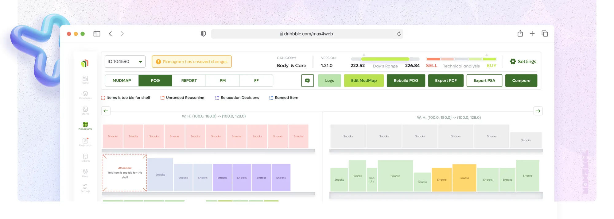
«The planogram is supposed to be implemented on the shelf. But it doesn't work. It provides too few facings for the fast-moving store brand article, but too many facings for products that do not perform. Some products are in the planogram even though they are not profitable for the store and are marked down again and again.»
A shelf is the most expensive square meter in a store
Every planogram decides which products get space and how much. Too few facings for fast movers means empty shelves and lost sales; too many for slow movers means stock that gets marked down again and again. The platform had one job — make every shelf meter earn — so I measured design decisions against sales per shelf meter and inventory on hand.
The market problem
of sales are lost to out-of-stocks in traditional retail
Source: Hydrianof shelf space goes unused with traditional planning
Source: ToolsGroupmonths of delay between sales strategy and in-store execution
Source: Gruen & CorstenThis gap between strategy and the real shelf is exactly where the product earns money — and where the interface has to be fast and foolproof enough for people who are not planners.
Problem
Merchandise placement was handled by office staff with no planning or analytics experience. Existing tools assumed expertise they didn't have, so layouts were built on gut feeling:
- Inefficient space — overloaded zones and shelves limit product accessibility.
- Disorganized categories — frequently bought items are spread out, slowing down shopping.
- Poor placement — high-margin and popular items end up in weak positions.
- No room for change — new arrivals and edits break the layout every time.
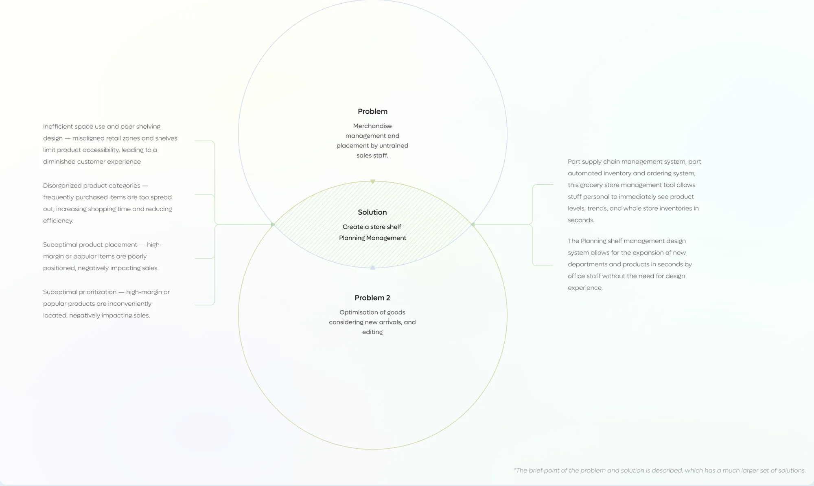
Process
Two years: from the first interview to a mature product
I didn't hand over mockups and leave. For two years I owned the product experience: designed the MVP, adapted it to real client stores after launch, shipped new features and kept simplifying what already existed — every step backed by usability tests, analytics and client feedback.
of continuous product work, not a one-off handoff
screens and flows designed and maintained
validated with usability tests and client feedback
Users don't read instructions — they try things.
So the interface had to guide and check the user by itself, instead of relying on training.
Mapping the work before drawing screens
35+ screens started as one user flow: access requests, categories, planograms, exports, reports and logs. Mapping it first let the team agree on scope and dependencies before a single pixel was drawn — and later made every new feature land in the right place.
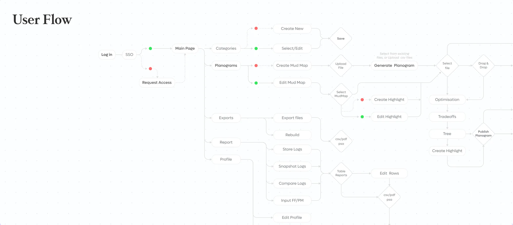
Solution
Move the expertise into the interface
Instead of teaching staff to become planners, I built three things into the product: a visual editor, validation in place of training, and guidance at the moment of action.
01 · Visual editor
See the shelf, not a spreadsheet
Planograms are edited on a visual shelf: drag products, change facings, open any item to set its size, value and tags. Staff work with what they see in the store, not with product codes.
- Why
- Staff think in shelves and products, not in tables and codes. A visual editor removes the translation step where most mistakes happen.
- Effect
- First store-level planograms in under 2 weeks instead of 20+ for a Fortune 500 grocer.
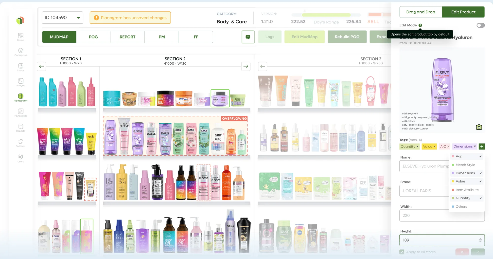
02 · Validation
Mistakes are caught on the screen, not in the store
Every change is checked against the real shelf. Overflowing sections and height mismatches are highlighted in place with a plain-language hint, so errors that used to surface after installation are fixed before export.
- Why
- An error found after installation costs a store visit and lost sales. An error found on screen costs one click.
- Effect
- Shelf space utilisation grew from 90% to 96%, with higher shelf compliance in stores.
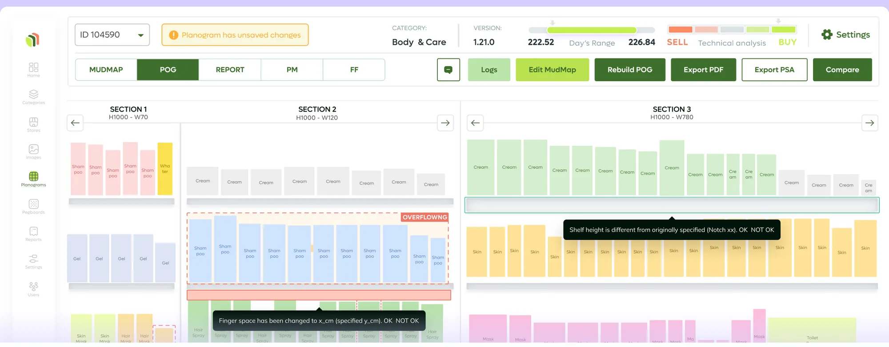
03 · Guidance
Onboarding inside the work, not before it
First-time users get short Quick Tips right where they act: select a store, open a mudmap, rebuild the planogram. No manual to read, no training session to book.
- Why
- Training sessions don't scale to thousands of stores. Guidance at the moment of action does.
- Effect
- Planning effort went down — teams were redeployed to vendor and strategy work.
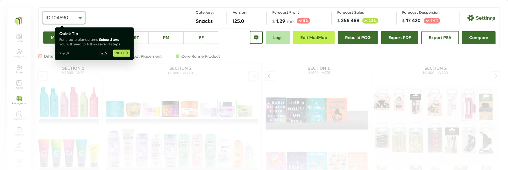
Analytics
Every layout change shows its money effect
Financial reports connect planograms to sales, profit, stock and displaced products. Category managers see planned vs actual results and which SKUs lost space — and act on data instead of intuition.
- Why
- Category managers have to defend every layout change to the business. Numbers next to the shelf make that conversation short.
- Effect
- +17% profit uplift vs. control stores for a global health & beauty retailer.
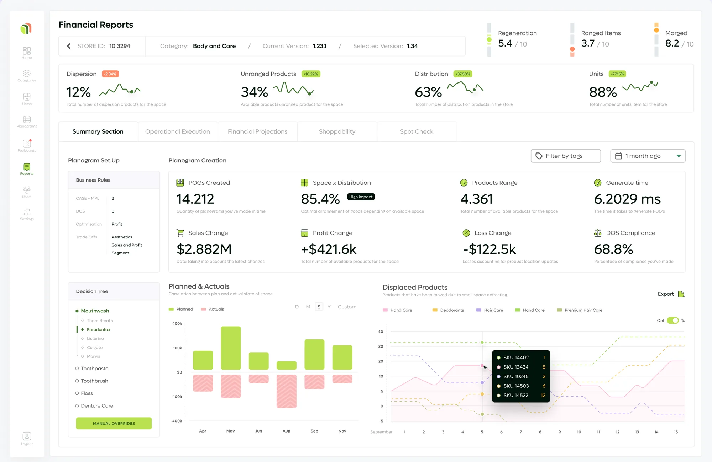
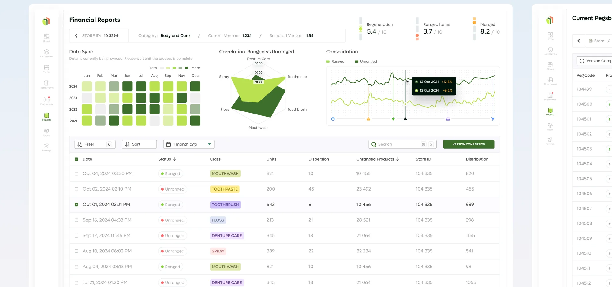
Compare versions before rolling out
Any planogram version can be compared with the previous one by sales, units, products and days of supply, with a one-click reset for a single value. Decisions became reversible — so teams experimented more.
- Why
- When a change can be undone, people stop being afraid to try. Fear of mistakes was the main brake on optimization.
- Effect
- Unlimited planogram scenarios, with changes made in minutes instead of days.
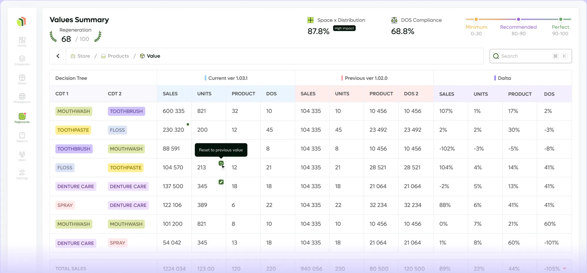
Precision where it matters
For the physical setup, pegboards and shelves keep exact parameters — offsets, peg spacing, class and type — so what's planned is exactly what gets installed.
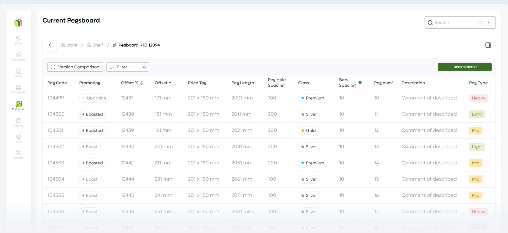
Interface details
The details that make a complex tool feel simple
A planning tool is used for hours every day, so small decisions add up. Each pattern below solves a concrete friction point found in testing or support tickets.
Every card below is interactive — click, type and save.
A design system that scales with the catalog
A component library with every state — default, hover, active, disabled, error — so developers never guessed and the product stayed consistent across 35+ screens for two years. New departments and products are added in seconds by office staff, without a designer.
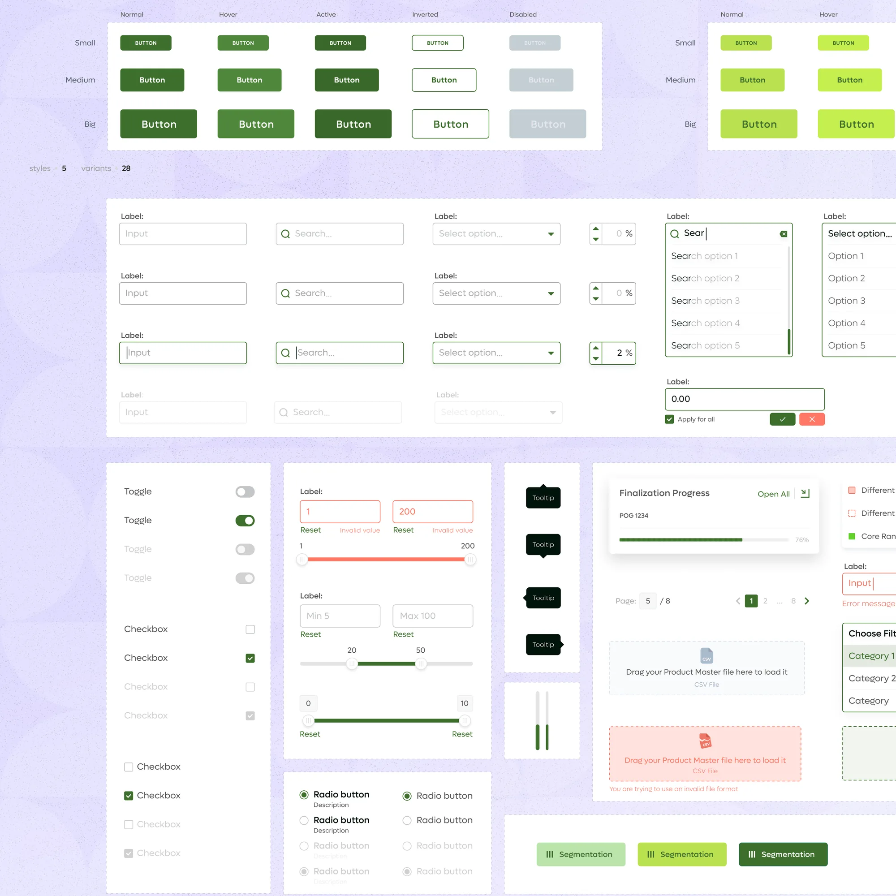
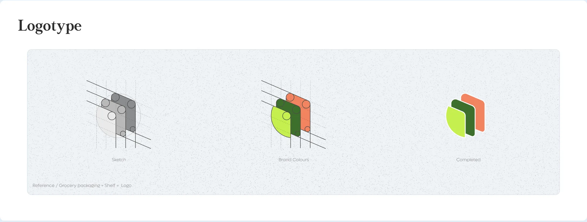
Marketing website
Designing how the product sells
A B2B product is bought by people who never open it: directors and procurement. I designed the website as a sales funnel that answers their questions in the order they ask them — what is it, does it work, what can it do, how much, how do I start.
01
One sentence of value, one action
The hero says what the product does in plain words and offers a single action — «Request a demo». A real dashboard below proves this is a working product, not a concept.
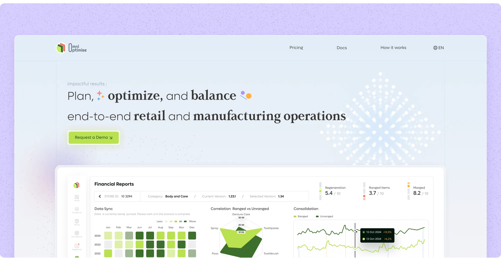
02
Proof before features
B2B buyers need numbers to sell the purchase internally. Results (+4% sales, −6% inventory, +15% efficiency) come right after the hero, before any feature list.
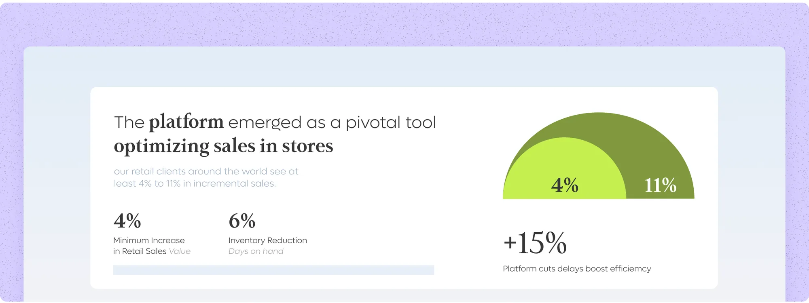
03
Capabilities mapped to buyer jobs
Five capabilities — replenishment, assortment, demand, planogram and floor planning — named the way retail teams describe their work, with the product shown next to them.
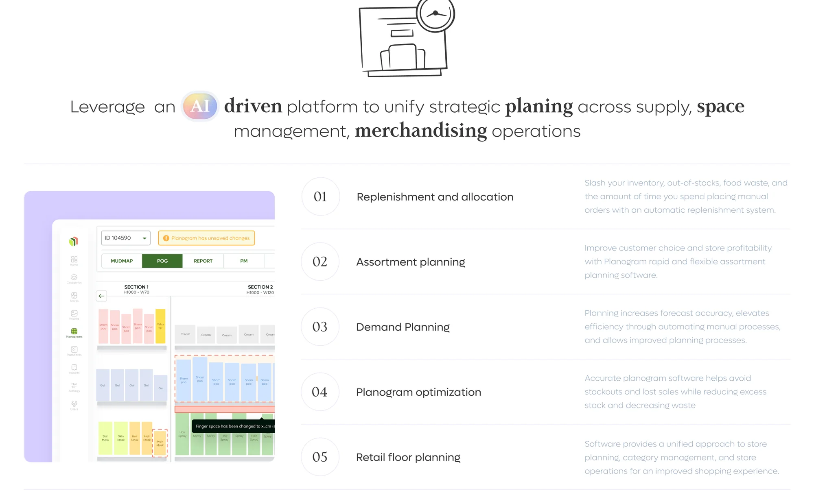
04
Pricing that lowers the barrier
Two clear tiers. Enterprise is marked as recommended to anchor the choice, and a first-year discount on Standard lowers the risk of the first purchase.
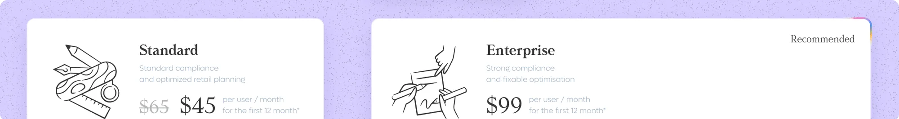
05
Answer objections, then ask
An accordion closes the main objections — integration with existing systems, store-level uniqueness, results. The final CTA lets a prospect upload a CSV and see suggestions on their own data before any sales call.
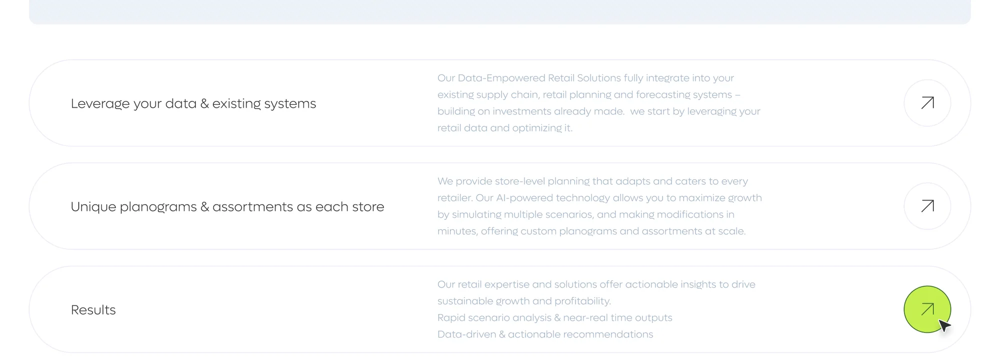
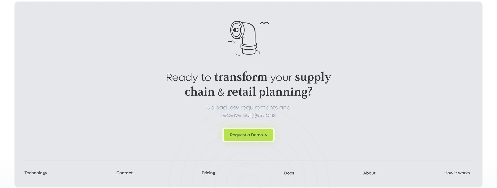
Usability testing
Usability tests after every major release
Each big release went through moderated tests with category managers. Example from one round — key task: «Add a new product to the planogram and fix all placement errors». After round one I added in-place error hints and Quick Tips for the first steps.
The product in production
Used by global retailers every week
The platform I designed runs real category management for convenience, grocery and health & beauty chains.
store-level planograms created weekly across 3,000+ stores
to first store-level plans instead of 20+ weeks, in 100+ stores
profit uplift vs. control stores
«[The platform] successfully managed our network-wide store-level assortment roll-out during a time when shopper behaviour changed more in 6 months than in 35 years.»
Results
Space Planning turned shelf planning from a specialist task into an everyday routine for store office staff. Guided editing, in-place validation and financial reports let non-planners make data-driven decisions — and let the business scale store-level planning without growing the planning team.
Results of retail clients using the platform, as published by the product company.